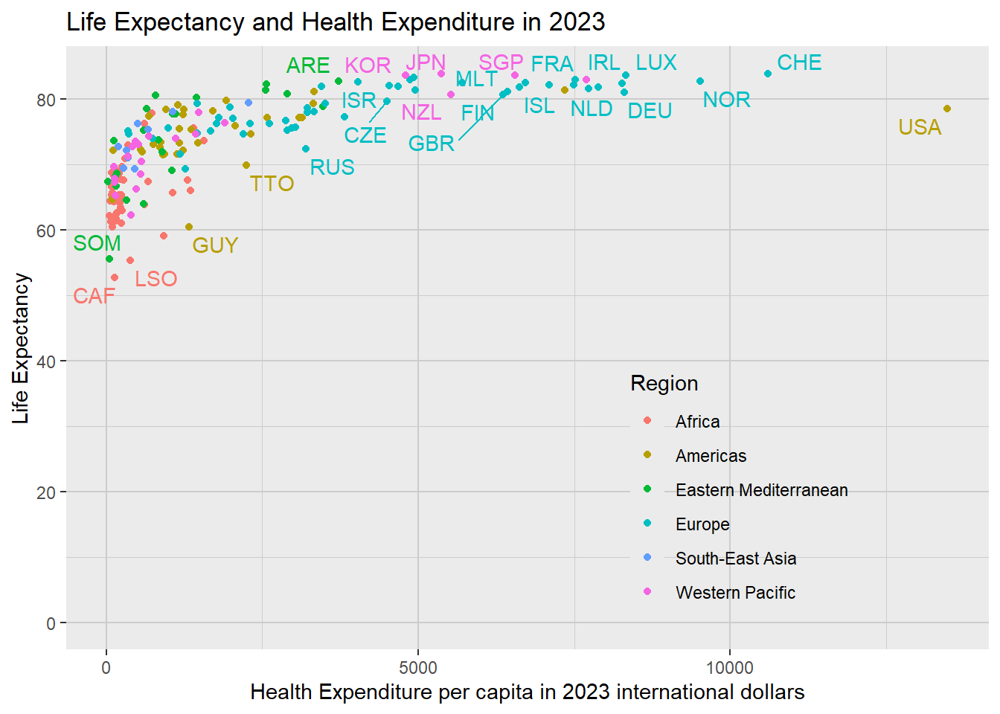
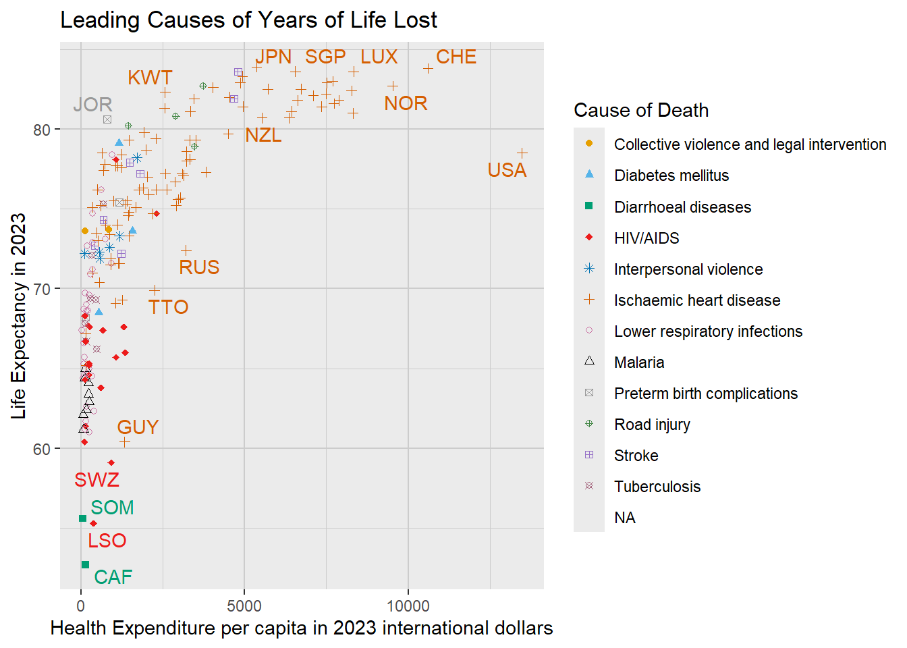
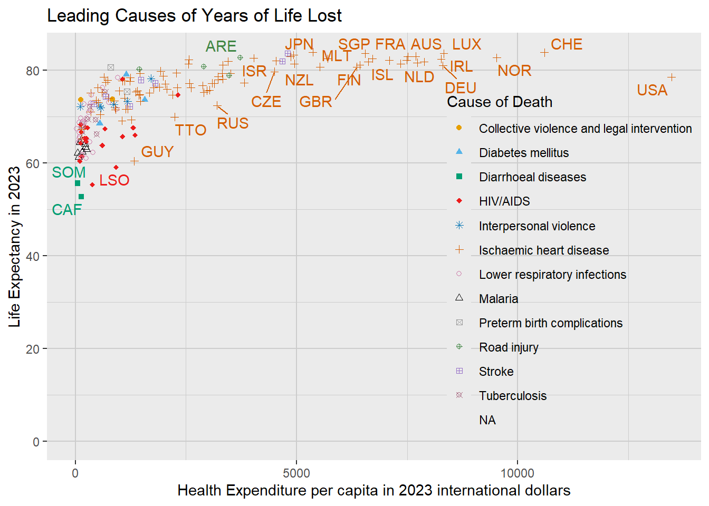
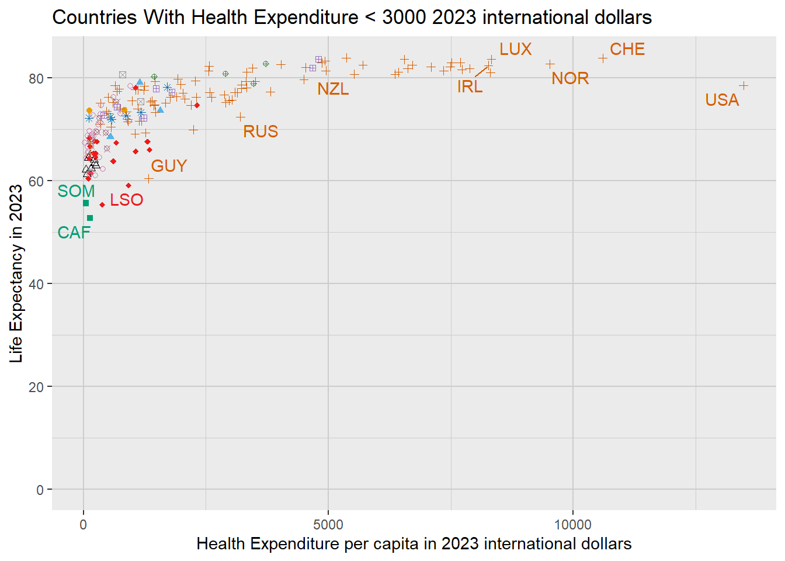

LE_HE |>filter(t ==2023) |>ggplot(aes(HE, LE, color = region)) +geom_point() +geom_text_repel(aes(label = c),show.legend =FALSE,max.overlaps =15,max.time =2 ) +ylim(0, NA) +labs(x ='Health Expenditure per capita in 2023 international dollars',y ='Life Expectancy',color ='Region',title ='Life Expectancy and Health Expenditure in 2023' ) + theme1 +theme(legend.position =c(0.6, 0.05),legend.justification =c(0, 0),legend.background =element_rect(fill ="transparent", colour =NA) )

Figure 1: Life exp HE test
What strikes me about this graph is the large variation in LE at each HE; it seems reasonable to at first think that the more (real spending on) healthcare per person a country has, the better its life expectancy would be. Assuming the Healthcare Expenditure values (x axis values) are a good measure of how much healthcare people get, it is clear from the graph that some countries get a much better deal than others. To me, it was an interesting challenge to work out why.
Before I examine individual countries, it makes sense to properly define “Health Expenditure per capita in 2023 international dollars” and Life Expectancy, and to give an overview of the main health challenges globally.
Measuring a Disease’s Impact
How many people die of a disease (its mortality rate) is the most obvious measure of its impact, but a better measure is the Years of Life Lost (YLL). For an individual this is how long they could have expected to live if the cause that killed them hadn’t occured. [[[[]]]] Footnote about WHO reference population for calculating YLLs, my use of life expectancy at death for a more “at the margin”/“counterfactual” measure[][][]
So for a person aged 80 in a population with life expectancy at 80 of 90 (i.e. 10 additional years of life, \(e_{80}=10\)), dying of coronary artery disease means we would measure 10 Years of Life Lost for coronary artery disease. If they had been 50 at death and the life expectancy at 50 was 78, we would measure 28 Years of Life Lost for coronary artery disease.
If we add up the YLL for every person who dies of coronay artery disease in a given year, we get an estimate of “how much life wasn’t/won’t be lived as a result of coronary artery disease”. The WHO have done this for every disease. TODO footnote about ICD10 classification of diseases
Leading Causes of Years of Lost Life and Mortality
Globally, the leading causes of years of lost life:
Note the difference in order of Years of Life Lost and Mortality, in particular lower respiratory infections vs ischaemic heart disease (coronary artery disease) - the latter causes 2.50 times as many deaths but still resulted in slightly less years of life lost. This means lower respiratory infections must tend to affect much younger people - on average those with 2.55 [[ FOOTNOTE explain calc ++++ times longer to live than ischaemic heart disease.
Lets look at the leading causes of YLL and mortality by country, first with respect to HE and LE:
This graph shows the leading cause of death over 2000:2023 for each country:
Code
LE_HE_leading_YLL <- mort_YLL_per_country |>group_by(c) |>slice_max(order_by = YLL_per_100k, n =1) |>right_join(LE_HE, by ='c') |>filter(t ==2023) |>ungroup()# Palestine (PSE) is introduced from the right join with LE_HE, but will have# NA in its Title, since country names are only in mort_YLL_per_country.# Re-run countrycode to fix this:LE_HE_leading_YLL <- LE_HE_leading_YLL |>mutate(Title =countrycode(sourcevar = c, 'iso3c', 'country.name'))colors <-c("#E69F00","#56B4E9","#009E73","#ec1b1b","#0072B2","#D55E00","#CC79A7","#000000","#999999","#418644","#9670c7","#a3627b","#5a0909")shapes <-c(16, 17, 15, 18, 8, 3, 1, 2, 7, 10, 12, 13, 6)LE_HE_leading_YLL |>ggplot(aes( HE_inflated_2023, LE,color = Disease,shape = Disease,label = c )) +geom_point() +geom_text_repel(show.legend =FALSE) +scale_shape_manual(values = shapes) +scale_color_manual(values = colors) +labs(x ='Health Expenditure per capita in 2023 international dollars',y ='Life Expectancy in 2023',color ='Cause of Death',shape ='Cause of Death',title ='Leading Causes of Years of Life Lost' ) + theme1
Warning: Removed 1 row containing missing values or values outside the scale range
(`geom_point()`).
Code
# df |># group_by(c, title) |># summarise(HE = mean(HE), LE = mean(LE), .groups = "drop_last") |># ggplot(aes(HE, LE, color = title, shape = title, label = c)) +# geom_point() +# geom_text_repel(show.legend = FALSE) +# ylim(0, NA) +# scale_shape_manual(values = shapes) +# scale_color_manual(values = colors) +# labs(# x = 'Health Expenditure',# y = 'Life Expectancy',# color = 'Cause of Death',# shape = 'Cause of Death'# ) +# theme1 +# theme(# legend.position = c(0.6, 0.05),# legend.justification = c(0, 0),# legend.background = element_rect(# fill = "transparent",# colour = NA# )# )

Figure 2: TODO broken y axis overexaggerates differences in LE
Code
colors <-c("#E69F00","#56B4E9","#009E73","#ec1b1b","#0072B2","#D55E00","#CC79A7","#000000","#999999","#418644","#9670c7","#a3627b")shapes <-c(16, 17, 15, 18, 8, 3, 1, 2, 7, 10, 12, 13)LE_HE_leading_YLL |>ggplot(aes( HE_inflated_2023, LE,color = Disease,shape = Disease,label = c )) +geom_point() +geom_text_repel(show.legend =FALSE,max.overlaps =15,max.time =2 ) +ylim(0, NA) +scale_shape_manual(values = shapes) +scale_color_manual(values = colors) +labs(x ='Health Expenditure per capita in 2023 international dollars',y ='Life Expectancy in 2023',color ='Cause of Death',shape ='Cause of Death',title ='Leading Causes of Years of Life Lost' ) + theme1 +theme(legend.position =c(0.6, 0.05),legend.justification =c(0, 0),legend.background =element_rect(fill ="transparent",colour =NA ) )
Warning: Removed 1 row containing missing values or values outside the scale range
(`geom_point()`).

Definition of Life Expectancy
The WHO metadata for the LE data I use includes:
Rationale: Life expectancy reflects the overall mortality level of a population. It summarizes the mortality pattern that prevails at the time in the remaining years of life at a certain age. Definition: The average number of years that a person could expect to live, if he or she were to pass through the remaining years of life exposed to the sex- and age-specific death rates prevailing at the time, for a specific year, in a given country, territory, or geographic area.
So LE values are summaries of death rates across age for a given year; an actual person will on average live longer than their corresponding LE value because mortality rates at younger ages decrease over time
Definition of Health Expenditure and Purchasing Power Parity
The data source I used for health expenditure figures is the WB_WDI_SH_XPD_CHEX_PP_CD indicator from the World Bank API data360api.worldbank.org TODO footnote about data URL. It is defined as
Current expenditures on health per capita expressed in international dollars at purchasing power parity.
“Current”
“Current” means the figures refer to the year in question, and need to be adjusted for inflation. For example, in 2010 in the USA, health expenditure per capita was:
Code
filter(LE_HE, c =='USA', t ==2010) |>select(`Nominal Health Expenditure`= HE)
# A tibble: 1 × 1
`Nominal Health Expenditure`
<dbl>
1 7836.
7836 dollars per capita. Theses are 2010 dollars though, so to compare them properly to the 2023 TODO or 2021!!! figures we need to adjust for inflation:
Code
filter(LE_HE, c =='USA', t %in%c(2010, 2023)) |>select(Year = t,`Nominal Health Expenditure`= HE,`Real Health Expenditure`= HE_inflated_2023 )
# A tibble: 2 × 3
Year `Nominal Health Expenditure` `Real Health Expenditure`
<dbl> <dbl> <dbl>
1 2010 7836. 10734.
2 2023 13473. 13473.
“Expenditures on Health”
“Expenditures on Health” refers to all sources of health spending: the metadata says:
“… all health spending in a given country over a defined period of time regardless of the entity or institution that financed and managed that spending.”
So it includes by the patient out of pocket, by the state, mandatory or private health insurance, or from foreign aid.
“International Dollars at Purchasing Power Parity”
What we want to know is the actual amount of healthcare people get. This is a bit of a loose concept but it is clearly related to the amount of money that is spent on their healthcare.
If we compare within a country, we can adjust for (medical) inflation to know whether, over time, people are recieving more or less healthcare, as I did above for the USA in 2010 vs 2023. But comparing across countries is more difficult. It isn’t valid to use market exchange rates, because some countries/places are simply more expensive to live in.
For example, suppose the USD:GBP exchange rate is $1.30:£1.00. If you went on holiday from the UK to the USA, and converted £100 to $130, that $130 wouldn’t buy you the same amount of stuff that the £100 would in the UK, it would typically buy you slightly less. But wages in the USA are higher (in market exchange rate terms), so in which country are people better off?
Instead of pretending we can exactly quantify the amount of healthcare, and say things like “person X got 11 units of healthcare”, we focus on a reference country and benchmark year
This is the correct indicator because health outcomes depend on the actual healthcare people get, so expenditure needs to be adjusted for the fact that healthcare costs different amounts in different countries. Converting local expenditures to, say, USD would fail to to account for the difference in purchasing power.
Note that these are “current expenditures… in international dollars”, i.e. 1000 int$ represents a sum that would buy you the same amount of stuff as 1000 USD would in that same year. As such they need to be adjusted for inflation to allow cross-year comparisons - both because 1000 USD buys much less in 2024 than it did in 2000, and because the purchasing power of other currencies relative to the contemporary USD may change over time. More details in appendix A
Which Countries are Outliers?
It’s a bit subjective to say which countries have surprising life expectancies - you would need to have an idea of what their LE “ought” to be in order to be surprised by the difference.
The way I will do it partly just by looking, and partly by fitting a simple curve and looking at which countries are furthest from that curve.
Code
LE_HE_leading_YLL |>ggplot(aes( HE_inflated_2023, LE,color = Disease,shape = Disease,label = c,show.legend =FALSE )) +geom_point() +geom_text_repel(show.legend =FALSE ) +ylim(0, NA) +scale_shape_manual(values = shapes) +scale_color_manual(values = colors) +labs(x ='Health Expenditure per capita in 2023 international dollars',y ='Life Expectancy in 2023',color ='Cause of Death',shape ='Cause of Death',title ='Countries With Health Expenditure < 3000 2023 international dollars' ) + theme1 +theme(legend.position ="none")
Warning: Removed 1 row containing missing values or values outside the scale range
(`geom_point()`).

The largest outliers on the low life expectancy side look like LSO (Lesotho), SWZ (Eswatini, formerly Swaziland), TTO (Trinidad and Tobago), RUS (Russia) and possibly the USA. JOR (Jordan) and KWT (Kuwait) might have unusually high life expectancies.
Using a log scale for HE makes the HE-LE relationship look reasonably linear:
Code
LE_HE_leading_YLL |>ggplot(aes(log(HE_inflated_2023), LE,color = Disease,shape = Disease,label = c,show.legend =FALSE )) +geom_point() +geom_text_repel(show.legend =FALSE,max.overlaps =10,max.time =2 ) +geom_smooth(aes(log(HE_inflated_2023), LE), inherit.aes = F, method ='lm') +ylim(0, NA) +scale_shape_manual(values = shapes) +scale_color_manual(values = colors) +labs(x ='Health Expenditure per capita in 2023 international dollars',y ='Life Expectancy in 2023',color ='Cause of Death',shape ='Cause of Death',title ='Using a log Scale to Find Outliers' ) + theme1
`geom_smooth()` using formula = 'y ~ x'
Warning: Removed 1 row containing missing values or values outside the scale range
(`geom_point()`).
Negative prediction error means the real life expectancy is less than predicted, and vice versa. I have no mortality data for Palestine, hence the NA value.
This is just a simple, automatic way to get the countries with surprising life expectancies; the exact values of the prediction error don’t mean much because the prediction model is so basic.
Neighbouring countries may have similar health challenges, so a world map with countries coloured by prediction error may suggest regions of interest:
There’s a group of countries in Southern Africa with low (relative to the fitted line) life expectancies, whose leading cause of years of life lost is HIV/AIDS, suggesting this is a big challenge there. Looking at the graph Figure 3 however, there are plenty of countries whose leading cause of YLL is also HIV (indicated by the red diamond) but whose life expenctancy is close to the expected value, so HIV/AIDS can’t be the whole reason why their LE underperforms.
What Else Determines Health Outcomes?
It’s certainly intuitive that the more you spend on healthcare, the better your life expectancy will be, and the above graphs clearly confirm that intuition for the most part.
The ways in which health expenditure could fail to (contain enough information to) predict life expectancy are of two types:
The health expenditure values do not sufficiently well capture the actual, real “amount of healthcare” people get,
The basket of goods used to adjust for purchasing power is not a medical basket, it is a [][][]][]economy wide basket in benchmark years and so may well be different from how healthcare prices vary by country. Also countries that face different health problems will have different healthcare spending, so a uniform medical basket may not be appropriate [][][]more stuff about how hard it is to say two sets of healthcare have the same “volume”
There are other factors that affect life expectancy that would never be captured by health expenditure data. Countries facing more health challenges will solve a smaller fraction of them with the same amount of money. For example:
War - both directly and from damaged infrastucture making healthcare harder. TODO data availability from countries with combat in their borders
Diseases being more prevalent due to geography, e.g. tropical diseases, or local epidemics could sustain themselves over time
Poor infrastructure could make it harder (cost more) to deliver healthcare to those who need it
Unsafe Water, Sanitation or Handwashing (WASH) can greatly increase the frequency of diarrhoeal diseases, nematode infections and malnutrition. It could also lead to more infections after operations.
In the rest of the article I examine these healthcare challenges by region and cause (TODO - vague?).
HIV in Southern Africa
There are a cluster of bordering countries in southern Africa that have a low life expectancy relative to their spending: Botswana (BWA), Eswatini (SWZ), Lesotho (LSO), Namibia (NAM) and South Africa (ZAF).
Their leading causes of death are all HIV (or rather, diseases which people are made more susceptible to by HIV, such as tuberculosis), but as there are plenty of countries whose leading cause of death is HIV but whose life expectancy is in line with their health expenditure, this can’t be the whole reason why their LE underperforms.
Let’s look at the trajectory of their Health Expenditure and Life Expectancy over time:
Code
cs <-c('BWA', 'SWZ', 'LSO', 'NAM', 'ZAF')df_minus <-filter(LE_HE, t ==2023, !c %in% cs, HE_inflated_2023 <4000)plot_c_and_background <-function(country) {# dat = filter(df, t>=2000, c == c | !c %in% cs) p <-ggplot(df_minus, aes(HE_inflated_2023, LE)) +geom_point(alpha =0.4, aes(), ) +geom_point(data =filter(LE_HE, t >=2000, c == country),aes(HE_inflated_2023, LE, color = t),inherit.aes = F,na.rm = T ) +xlim(0, 4000) +ylim(0, NA) +scale_color_gradient(low ="blue",high ="red",breaks =c(2000, 2023),labels =c(2000, 2023) ) +labs(title = country) + theme1 p}x <-map(cs, plot_c_and_background)full_plot <- (x[[1]] + x[[2]] + x[[3]]) / (x[[4]] + x[[5]]) &theme(legend.position ="bottom")full_plot +plot_layout(guides ="collect")
`summarise()` has regrouped the output.
ℹ Summaries were computed grouped by Year and age_lower.
ℹ Output is grouped by Year.
ℹ Use `summarise(.groups = "drop_last")` to silence this message.
ℹ Use `summarise(.by = c(Year, age_lower))` for per-operation grouping
(`?dplyr::dplyr_by`) instead.
Code
df_ZAF |>group_by(Year) |>summarise(YLL =sum(n_deaths_spread * ex_interpolated, na.rm = T),extra_LE = YLL /1e5 ) |>ggplot(aes(Year, extra_LE)) +labs(x ='Year',y ='Extra Life Expectancy',title ='Estimate of Extra Life Expectancy in the Absence of HIV' ) +geom_point() +ylim(0, 9)
Adjusting for inflation, GDP deflators, limitations
Appendix B: Mortality Data Availibility
WHOMDB provides detailed mortality data for most countries and years. THis means for every country, year, cause of death, sex and age range they report the number of deaths.
Mort data comes from WHOMDB, which is from and comes from countries reporting their own death statistics. Some countries don’t copllect this? or don’t report it to the WHO? so detailed mortality data is not available. WHO adjust the data to account for under-reporting, which I assume they do pretty well.
If a country isn’;’t in the whomdb, I use its neighbors and any relevant indicators from the GHO API
Warning: There was 1 warning in `mutate()`.
ℹ In argument: `id = countrycode(region, origin = "country.name", destination =
"iso3c")`.
Caused by warning:
! Some values were not matched unambiguously: Ascension Island, Azores, Barbuda, Bonaire, Canary Islands, Chagos Archipelago, Grenadines, Heard Island, Kosovo, Madeira Islands, Micronesia, Saba, Saint Martin, Siachen Glacier, Sint Eustatius, Virgin Islands
To fix unmatched values, please use the `custom_match` argument. If you think the default matching rules should be improved, please file an issue at https://github.com/vincentarelbundock/countrycode/issues